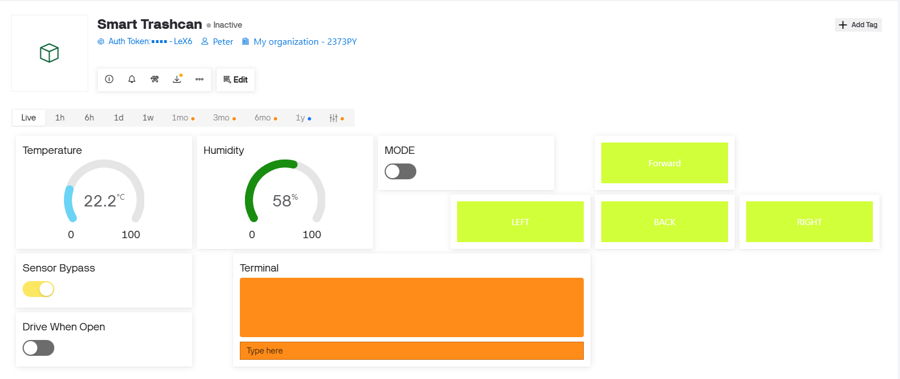
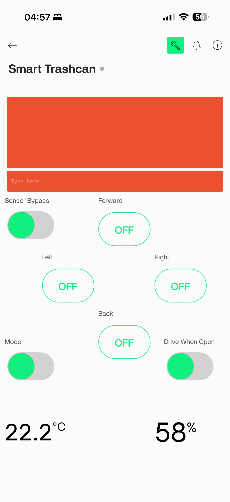
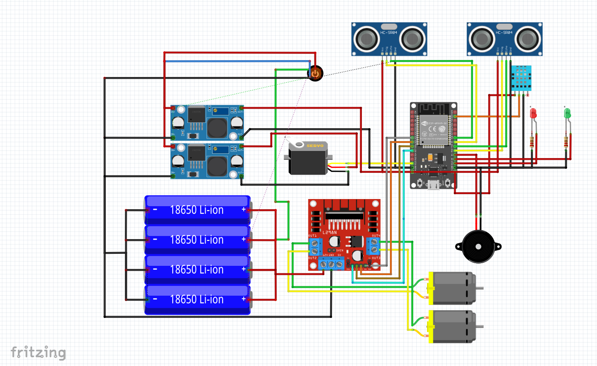
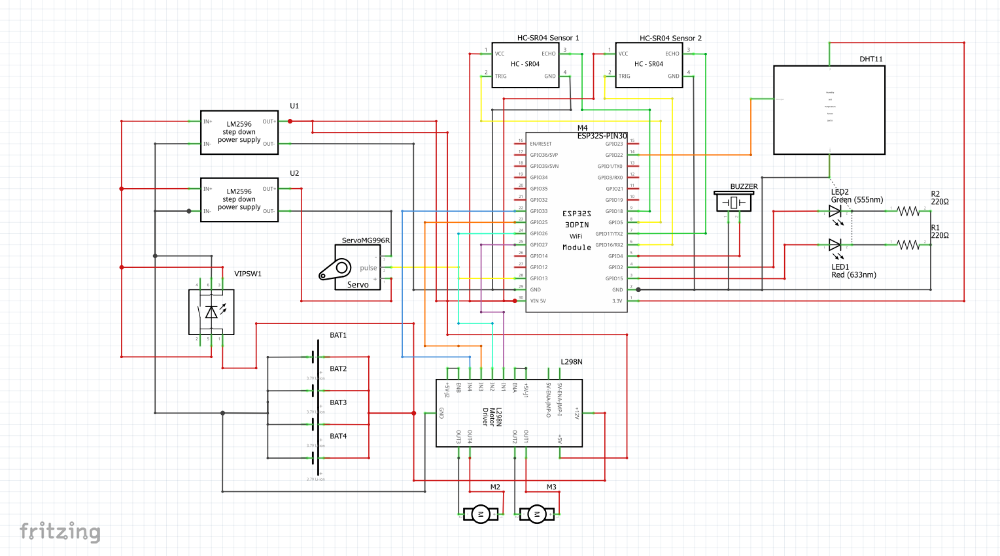

← กลับไปหน้าผลงานเด่น
IoT & Hardware
Smart Trashcan (IoT)
โปรเจกต์ระบบถังขยะอัจฉริยะที่ผสานการทำงานของฮาร์ดแวร์และซอฟต์แวร์ สามารถวัดอุณหภูมิและความชื้นรอบตัว มีระบบเซ็นเซอร์เปิดฝาอัตโนมัติเมื่อผู้ใช้อยู่ในระยะ และควบคุมการขับเคลื่อนมอเตอร์ให้ถังขยะเคลื่อนที่เข้าหาผู้ใช้ได้ผ่าน Web Dashboard
สิ่งที่ทำในโปรเจกต์
- ออกแบบและต่อวงจรฮาร์ดแวร์ จัดการระบบจ่ายไฟ ให้กับอุปกรณ์
- เขียนโค้ดภาษา C/C++ ควบคุมเซ็นเซอร์ Ultrasonic และ Servo Motor สำหรับฝาถัง
- พัฒนาระบบสื่อสารระหว่าง ESP32 และ IoT Dashboard (Blynk) ผ่าน Wi-Fi
- ทดสอบและแก้ปัญหาการทำงานร่วมกันของระบบเคลื่อนที่ (L298N) และการรับส่งค่าแบบ Real-time
ลิงก์โค้ด
สามารถเข้าชมซอร์สโค้ดและรายละเอียดโครงสร้างไฟล์เพิ่มเติมได้ที่ GitHub
https://github.com/Phuwadon999/Smart_TrashCan
1 / 5
 ต้นแบบ Smart Trashcan
ต้นแบบ Smart Trashcan

หน้า Web Dashboard

การควบคุมผ่าน Mobile App

โครงสร้างวงจรภาพรวม (Fritzing)

รายละเอียดการเชื่อมต่อสายไฟ